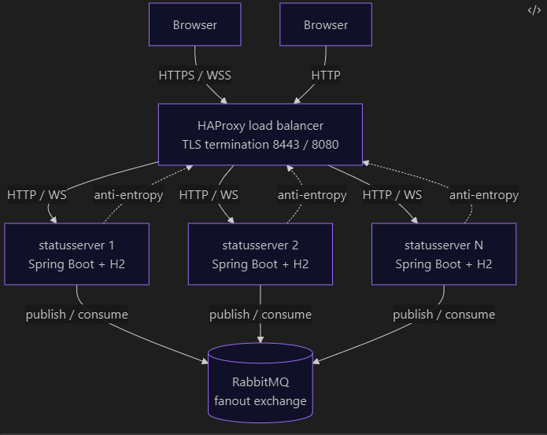
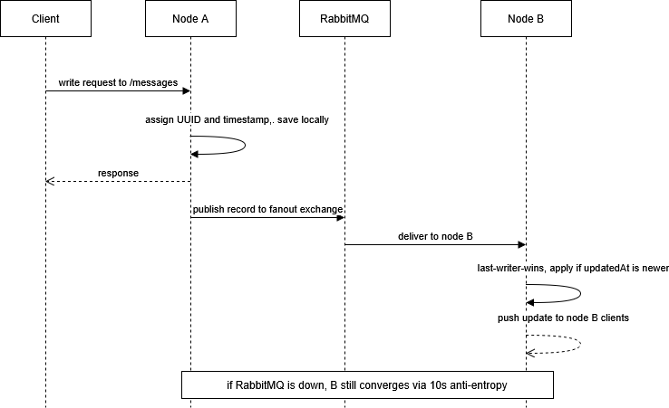

Distributed Status Server
Technologien Verteilter Systeme (SS26)
Fault-Tolerant Distributed Status Messaging Platform
Marcel Dumitru • Michael Mayr • Andreas Weinhofer
Project Goal
- Distributed CRUD application for geo-tagged status messages
- Replication across multiple nodes
- Fault tolerance and recovery
- Eventual consistency
- Fully containerized deployment
UI
- Interactive map dashboard
- Create / Update / Delete status messages
- Live updates
Technology Stack
Backend
Spring Boot 4
Java 21
Storage
H2 In-Memory DB
Communication
REST
RabbitMQ
WebSocket
Infrastructure
Docker Compose
HAProxy
System Architecture

Communication
REST
Frontend → Backend CRUD operations
RabbitMQ
Backend → Backend replication
WebSocket
Backend → Frontend live updates
Replication Mechanism

Conflict Resolution
Last Writer Wins (LWW)
Node A:
status = "Hello"
updatedAt = 10:01
Node B:
status = "Hi"
updatedAt = 10:02
Result: "Hi" wins because timestamp is newer.
Deletes & Tombstones
- Deletes are replicated like updates
- Record remains in storage with deleted=true
- Prevents deleted data from reappearing
- Tombstones included in synchronization endpoint
Fault Tolerance
- Any node can fail without data loss
- HAProxy routes traffic to remaining nodes
- RabbitMQ outages do not block writes
- System converges automatically
Bootstrap Recovery
When a node starts:
- Requests full cluster state via
/messages/sync
- Merges received data using LWW
- Receives all missed updates
- Becomes fully synchronized
Anti-Entropy Synchronization
Every 10 seconds:
GET /messages/sync
- Repairs missed RabbitMQ messages
- Recovers from temporary outages
- Guarantees eventual consistency
- Meets 15 second convergence requirement
Security
- HTTPS and WSS via HAProxy
- TLS termination at load balancer
- Self-signed certificate for demo
- Internal Docker network uses HTTP
Containerized Deployment
docker compose up --build --scale statusserver=3
Starts:
- HAProxy
- RabbitMQ
- 3+ Status Server Nodes